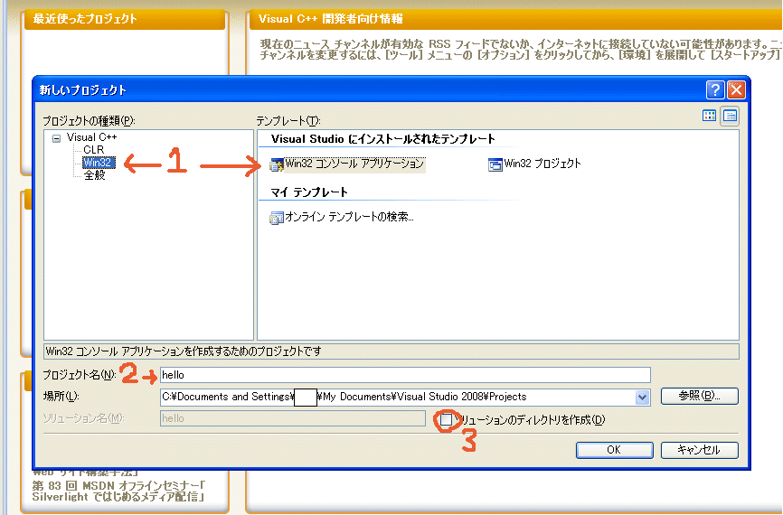
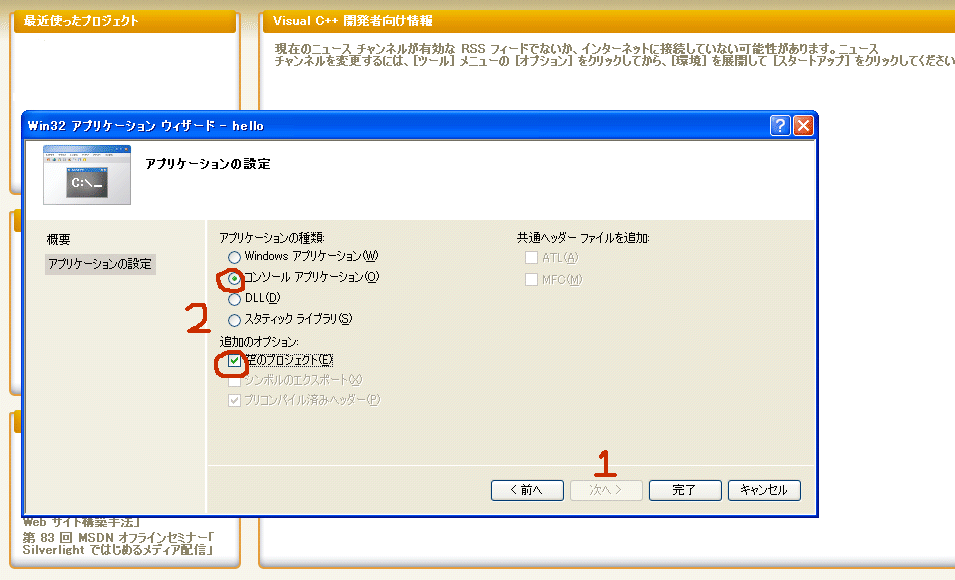
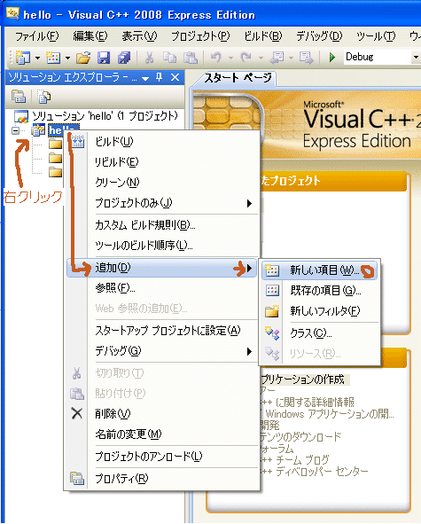
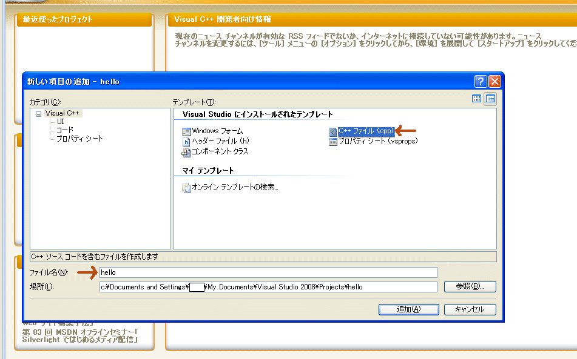
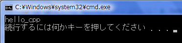

1.新規プロジェクトの作成
プロジェクト
の作成方法は他のMicrosoft製品と同じく、ファイル→新規作成→プロジェクトをクリックします。
そうすると作成ウィザードが出てきます。

1 win32→win32コンソールアプリケーションを選択します。
2
プロジェクト名を決めます。今回は「hello」にします。
3
「ソリューションのディレクトリを作成」はチェックを外した方がいいでしょう。
全て設定したら、OKを押しましょう。
そうすると、win32コンソールアプリケーション作成ウィザードが出てきます。

1 「次へ」を押します。
2
「コンソールアプリケーション」と「空のプロジェクト」にチェックを入れます。
で完了します。
そうすると、左側にソリューションエクスプローラが表示されます。

1 「プロジェクト名（hello）」をクリックして、右クリックメニューを表示します。
2
追加→新しい項目を選択します。
そうすると、追加ウィザードが出てきます。

C++ファイルを選び、ファイル名はなんでもいいですが、ここでは「hello」にしておきます。
ソリューションにcppファイル（拡張子|*.cpp）であるhello.cppが追加されました。
これにコードを書いていきます。
要はウィザードに従って設定すればいいのです。
では、次のコードを書いてみましょう。
「画面に"hello_cpp"と表示させる」
コードを書いたらデバック→デバック無しで開始「Ctrl+F5」で開始します。
#include <iostream>
using namespace std;
void main(){
cout<<"hello_cpp"<<endl;
}
結果::

まだ意味は覚えなくていいです。
画面に「hello_cpp」と表示
されましたか？
次回からはコードの意味を解説していきます。